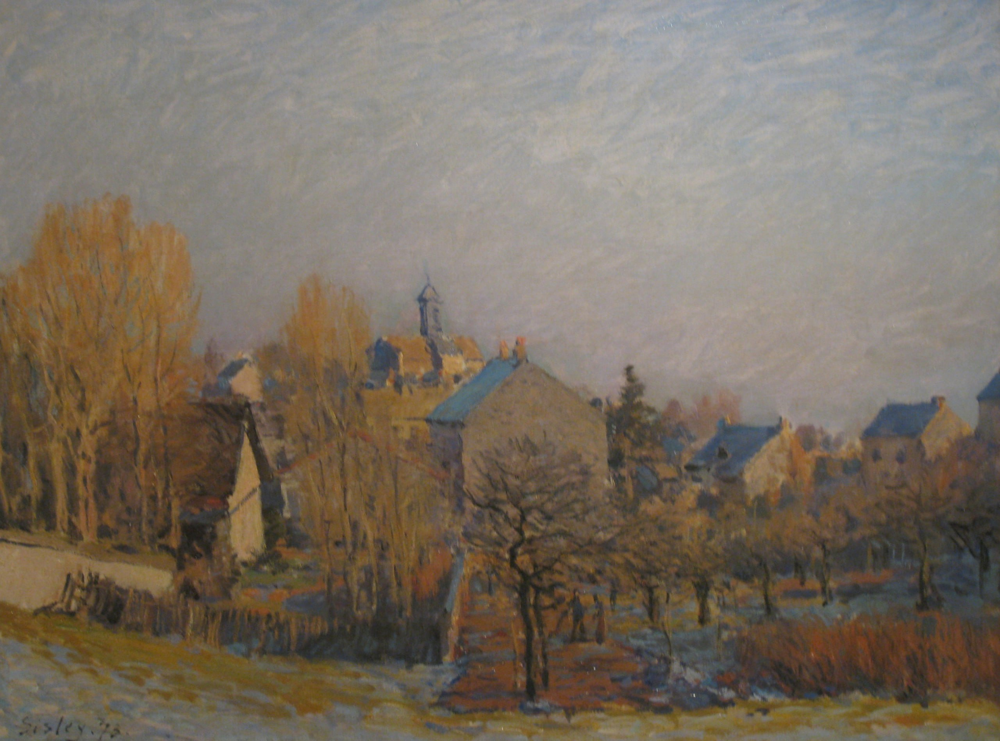

Альфред Сислей
La gelée à Louvecienne (Мороз в Лувесьенне), 1873

Холст, масло, 46 x 61 см
ГМИИ им. А.С. Пушкина, Москва.
История картины
- В 1902 приобретена Дюран-Рюэлем на распродаже коллекции Жюля Штрауса в Париже за 9300 франков
- в 1903 приобретена И.А. Морозовым у Дюран-Рюэля за 11 500 франков
- с 1919 в МНЗЖ
- с 1923 в ГМНЗИ
- с 1948 в ГМИИ. Купленная И.А. Морозовым в 1903 году картина Сислея "Мороз в Лувесьенне" относится к числу первых произведений французской живописи в его собрании. Начинающий коллекционер приобрёл её по совету Дюран-Рюэля, который испытывал особую симпатию к этому художнику. Пейзаж был создан в Лувесьенне, где художник работал начиная с 1871 года. Нежный колорит и мягкий рассеянный свет картины свидетельствуют о том, что до начала 1870-х годов живописец был под сильным влиянием Камиля Коро. Морозов владел пятью произведениями Сислея, созданными до 1885 года (его поздней манеры московский собиратель не принимал). https://collection.pushkinmuseum.art/entity/OBJECT/78283?query=Мороз&index=0 http://www.newestmuseum.ru/data/authors/s/sisley_alfred/frosty_morning_at_louveciennes.php?lang=ru
Источник: https://pushkinmuseum.art/data/fonds/europe_and_america/j/2001_3000/zh_3420/index.php?lang=ru